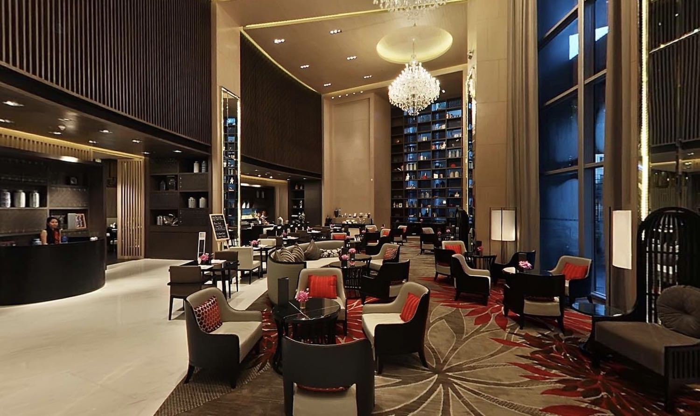
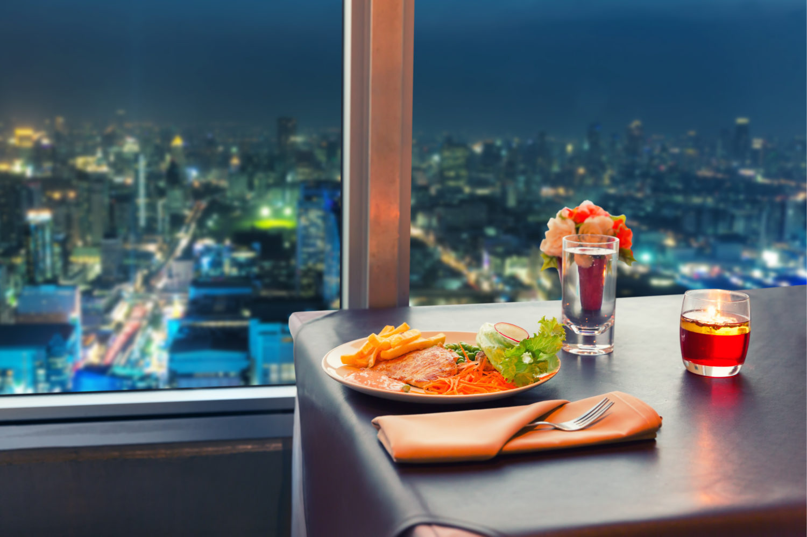

【最高】バンコクにあるサービスアパートメント３選【少し高級です】
こんにちは、ゆーだいです。
バンコク在住は、３年目です。
現地については、かなり詳しいです。
おはようバンコク。よし、本日は久しぶりに「バンコク紹介のブログ」でも書こうかなと思っています😌
テーマとしては、バンコクにある「快適すぎる、サービスアパートメント3選」という感じ。ニッチですが、昔の僕が読みたかった記事です。1ヶ月ほどバンコクに住む際に、最適な方法です— マナブ@バンコク (@manabubannai) September 8, 2020
テーマとしては、バンコクにある「快適すぎる、サービスアパートメント3選」という感じ。ニッチですが、昔の僕が読みたかった記事です。1ヶ月ほどバンコクに住む際に、最適な方法です
今回は「サービスアパートメントのまとめ」です。
すべて宿泊したので、快適だと断言できます。是非どうぞ。
バンコクにあるサービスアパートメント３選【少し高級】
{kind=link}
- １位：マリオット アパートメント トンロー（1泊 1万円）
- ２位：マリオット アパートメント スクンビット（1泊 1万円）
- ３位：オークウッド スイーツ バンコク（1泊 5,000円）
上記のとおり。
値段はざっくりです。
時期によって異なります。
それでは、順番に紹介します。
１位：マリオット アパートメント トンロー

| 満足度 | ★★★★★ |
| 宿泊費 | １泊 １万円くらい |
| 立地 | トンロー駅から徒歩１分（地図はこちら） |
| 予約 | Agodaで確認する |
ホテルの特徴とは
一言でいうと「高級＆ハイソ」ですかね。
ラグジュアリーな作りになっており、高級感が溢れます。
言うまでもなく、ホテルの接客もよく、ロビーの休憩スペースも最高です。

こういった感じ。ここでコーヒーを飲んだり、ちょっと仕事したり、あとはお酒も飲めます。
{kind=link}
あと、奥に進むと「ビュッフェ」もあるので、空腹になったら、美味しいご飯を食べれます。
誰にオススメか？
バンコクにて「ハイソな暮らし」を体験したいなら、ここが良いと思います。
そして、タイ人の金持ちが集まっています。
ちなみに余談ですが、夜遊びしたい男性にもオススメ。
ロビーが広々としているから、お持ち帰りっぽい客も、ちょくちょく見かけました。
写真ギャラリー
僕が撮影した写真もあるのですが、品質が微妙なので、公式サイトの画像をお借りしています。

部屋は、こんな感じです。
ここは高級ルームなので、僕が宿泊したときは、もうすこしランクを下げました。
しかし、雰囲気はこんな感じ。ちなみに、全ての部屋にバスタブも付いています。

プールもあります。こういった場所でも、どこでもお酒を注文できるので、のんびり飲めます。
あと、こういったホテルって「虫の除去」をしているので、蚊が少ないです。 バンコクで飲むときは蚊よけ必須ですが、こういった高級ホテルとかだと、虫がいなくて最高です。

もちろん、ジムもあります。一通りの器具が揃っており、マッチョでも安心です。

こちらがバーです。いい景色ですね。
たしかルーフトップバーだったと思います。
あと、ホテルの２階にも高級レストランがあります。
ドレスコードありなので、Tシャツ＆短パンとかだと、NGです。
» Agodaでホテルを予約する
２位：マリオット アパートメント スクンビット（1泊 1万円）

| オススメ度 | ★★★★★ |
| 宿泊費 | １泊 １万円くらい |
| 立地 | プロンポン駅から徒歩８分（地図はこちら） |
| 予約 | Agodaで確認する |
ホテルの特徴とは
結論として、僕はここが「イチオシ」です。
住みやすさで言うなら、ベストですね。
１つ前に紹介したトンローのマリオットもいいですが、なにせ「超ハイソ」という感じなので、落ち着きが減ります。
老人とかも多かったです。
誰にオススメか？
のんびりしたい方です。
徒歩圏内に「エンポリアムデパート」があるので、そこに行けば、すべて揃います。
なお、エンポリアムまでは徒歩８分とかで、ちょっと遠いです。
その場合は、バイクタクシーに乗ると、２分です。
写真ギャラリー
公式サイトからお借りしました。

部屋はこんな感じです。
先ほどの「トンローのマリオット」と比べると、一目瞭然ですよね。 落ち着いた雰囲気です。バスタブあります。

こちらがロビー。やはり、落ち着いた雰囲気ですよね。
悪くいうと、ちょっと古くさい感じです。 しかし僕は根暗なので、こちらが好きでした。

プール前のバーが、こちら。ここも、とても気持ち良いです。
この横にジムがあるのですが、筋トレを終えたら、ここで休憩できます。

こちらがジムですね。
ジムの質でいうと、トンローのマリオットを超えている気がします。 写真だと見えないですが、この倍の広さがあります。
» Agodaでホテルを予約する
３位：オークウッド スイーツ バンコク（1泊 5,000円）

| オススメ度 | ★★★★☆ |
| 宿泊費 | １泊 5,000円くらい |
| 立地 | プロンポン駅から徒歩２分（地図はこちら） |
| 予約 | Agodaで確認する |
ホテルの特徴とは
結論として「コスパ＆立地良し」というホテル。
プロンポン駅にはエンポリアムという巨大デパートがあるのですが、その横に位置しています。徒歩２分でデパートに行けて、便利すぎる。
ただ、デメリットとしては、やはりマリオットよりは質が下がりますね。
とはいえ、概ね満足です。コスパ良いです。
誰にオススメか？
コスパ重視なら、ここでいいかなと。
普段は田舎に住んでいるのですが、ちょっと用事があり、中心部に来ています。
こういった感じで「ちょっと中心部に来て、立地重視で滞在したい」というニーズなら、バッチリかなと。
しかし予算に余裕があるなら、マリオットが良いですね。
やはり、ホテルの「格」がちょっと変わると思います。
写真ギャラリー
またまた、公式サイトからお借りします。

部屋がこちら。まさに、僕が滞在している部屋です。
シンプルなスタジオルームですが、とても満足。
１〜２名の滞在なら、ここでいいかなと。
あと、全部屋にバスタブが付いています。

こちらがプール。そこまで広くないですが、十分ですね。
金持ちっぽいタイ人とか、あとは欧米人がいます。 金持ちっぽいタイ人は、なんかインスタ用なのか、写真を撮りまくっていました。

ここがカフェです。ここのカフェは、かなりいい感じです。
いつもガラガラなので、快適です。
しかしちょっと空調が強く、寒いです。
なので仕事をするなら、８階にある「作業スペース」がいいかもです。

こちらがジムです。今回紹介したホテルは３つですが、ジムだけで選ぶなら、ここがベストかもです。
清潔で、器具も多いです。 空調とかも、勝手に調節できるので、快適にトレーニングできます。
» Agodaでホテルを予約する
絶対に失敗しない、高級レストランを紹介【２つだけ】

良いホテルに泊まりつつ、かつ「美味い飯」を食べたいですよね。
そういった場合は、次の２つがオススメです。
{kind=link}
- 北大路（カニ鍋、寿司）
- Baan Khanitha（タイ料理）
上記のとおり。
高いので、頻繁には行けません。
しかし、バンコク滞在を最高にしたいなら、足を運んでみるのもあり。
北大路（カニ鍋、寿司）
予算の目安は「１〜３万／名」です。
つまり、２名で食べにいくと、ざっくり「15,000バーツ（約５万円）」とかです。
バンコク内でいうなら、たぶん超高級レストランなはず。しかし、味が神。
上記は僕のインスタですが、ウマすぎです。
カニ鍋があるのですが、マジで旨くて感動します。
予約なしで行けますが、個室希望なら予約しましょう。
ドレスコードとかも、特になしです。僕はスポーツウェアで行っています。
北大路の情報まとめ
| 名称 | 北大路 |
| 住所 | 212 Thong Lo 8 Alley, Khwaeng Khlong Tan Nuea, Khet Watthana, Krung Thep Maha Nakhon（地図はこちら） |
| 電話 | +6627147997 |
| 公式サイト | 北大路BANGKOK |
Baan Khanitha（タイ料理）
こちらも美味い。本格的なタイ料理です。
つまり、辛すぎないので、お腹に優しいです。
タイには美味いレストランが多いですが、ローカル向けだと、激辛だったりします。
僕は激辛でも、わりといけるのですが、観光客が食べると、お腹がゆるんだりしますね。
ちょっと画質が微妙ですが、こちらがオススメです。
海鮮の盛り合わせ的な感じで、お値段「2,000バーツ（約6,500円）」とかなのですが、美味い。
３名くらいで分けつつ食べると、ちょうど良いです。
あとは、トムヤムクンとかも、かなり美味いです。ドレスコードないです。
Baan Khanithaの情報まとめ
| 名称 | Baan Khanitha at Fifty Three |
| 住所 | 31 Sukhumvit 53 Alley, Khlong Tan Nuea, Watthana, Bangkok 10110（地図はこちら） |
| 電話 | +6622598530 |
| 公式サイト | Luxury Thai Restaurant Thong Lor |
補足：ローカルを楽しみたい場合
ローカル料理を食べたいなら、下記がオススメです。
スダ―レストラン

こちらは写真のとおり、ローカル向けです。
しかし外国人客も多く、美味いし、辛いです。
僕は日本から友人が来たら、わりとここに案内します。
注意点としては、辛いことですかね。
なお、蚊が多かったりしますので、蚊よけ必須です。
コンビニとかで売っているので、買いましょう。
スダ―レストランの情報まとめ
| 名称 | Suda |
| 住所 | 6 6/1 Sukhumvit 14 Alley, Khlong Toei, Bangkok 10110（地図はこちら） |
| 電話 | +6622294664 |
バンコクは、最高です
というわけで、今回は以上です。
この記事は「友人が来るときに、サクッと送れば便利だな」と思って執筆しました。
その他にも、知っておくと便利な知識もありますので、関連記事を貼りつつ、記事を終えます。
【初回乗車が無料】バンコクのタクシー事情【費用・注意点・アプリ】
バンコク旅行が不安だなぁ。タクシーにぼったくられて一文無しになったらどうしよう・・・。怖すぎる・・・。」こういった方向け。本記事では『バンコクでのタクシー料金相場』『タクシー利用の注意点』『快適にタクシー利用するコツ』をまとめました。
【手数料０円】バンコク（海外）でATMの使い方【写真付きの解説】
バンコクでATMの使い方が分からない方向け。記事で次の点をまとめました。『バンコクを含めた海外でのATMの使い方』『具体的なATMの使い方と手数料の話【手数料０円の裏ワザ付き】』『オトクな引き出し方法：キャッシングについて』記事をしっかり読んで、快適なバンコク生活を手に入れましょう！
【１分で解説】バンコクSIMなら、AISを選ぶべし【旅行者向け】
「バンコク旅行でおすすめなSIMを知りたい。バンコク旅行中も快適なWiFiで、快適な旅をしたいなぁ。」←こういった疑問に答えます。だらだら解説しても仕方ないので、１分で読めるようにまとめました。バンコク在住の僕が語ります。
P.S：普段の僕は「Twitter」を軸に発信しています。また最近は「Webマーケ教材」の作成に注力しており、ネットで稼ぐスキルを学べます。ブログの更新通知はtwitterからお知らせします。